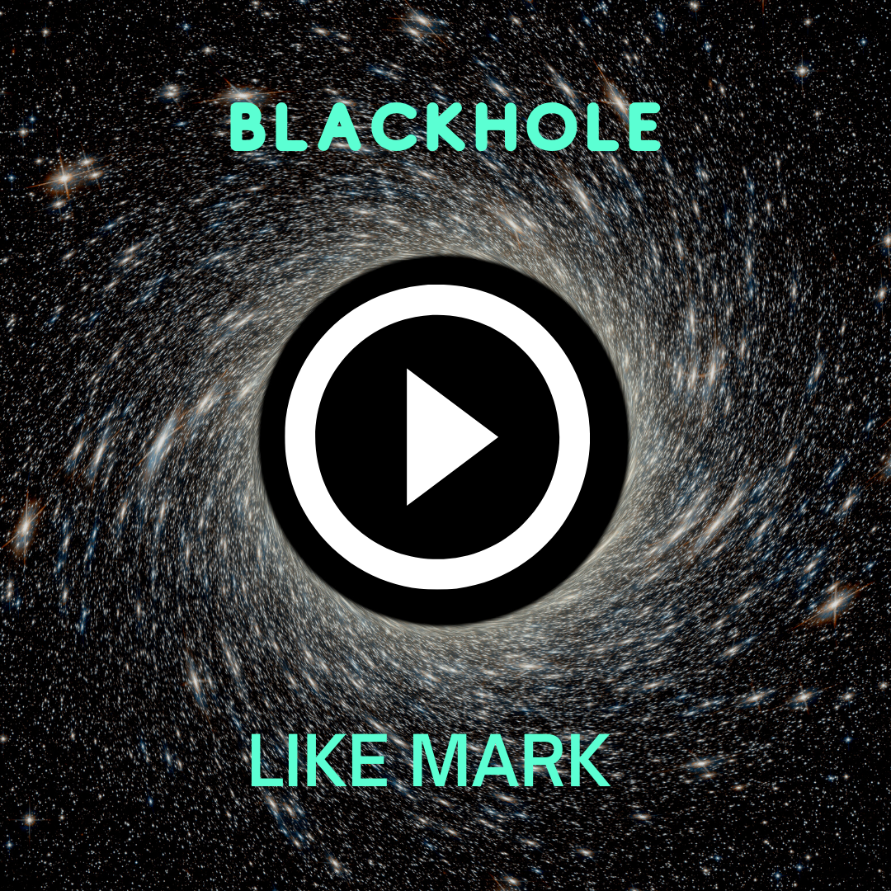

Inspirado na setima constelação Selestial, Esta é um proposta de eletrônica e house que é feita com base nas vibrações rítmicas de um burraco negro, #Blackhole #House #NASA
Este Post foi inspirado em um artigo cientiífico da NASA, Cliqui Aqui para Saber mais
Inspirado no pesquisador Scott McColl na Sua descoberta do buraco negro, o nosso personagem sobrevive a vários desafios de aprendizagem para alcançar o burraco negro! Acompane o little Scott nessa Jornada
Gostos deJohnatan Kleiber & 25 mais
Este Post foi inspirado em um artigo cientiífico da NASA, Cliqui Aqui para Saber mais

Ana Maria
8m
Logo que eu li o artigo doi resumo da última viagem espacial da aeronave 075 da Nasa, me senti bastante inspirada em criar essa obra semelhante a visualização das mudanças climáticas na Terra

Este Post foi inspirado em um artigo cientiífico da NASA, Cliqui Aqui para Saber mais

Bruna Cassia 1m
Uma Sugestão, mostrar mais as mudanças climáticas na prepectiva de Marte ou Saturno.
Ver mais comentarios(12)
Igor 1m
Bem maneiro, me lemra a constelação celestial de WizKsajsh